t = linspace(-4,4,1000);
signal = zeros(1000,1);
for i = 1:1000
val = sin(pi*t(i))/(pi*t(i));
signal(i)=val;
end
figure(1);
plot(t,signal);
hold on;
xlabel('t');
ylabel('s(t)');
title('Figure 1');
legend('Q1-Sinus cardinal');
hold off;
t = linspace(-2,2,500);
s1 = zeros(500,1);
s2 = zeros(500,1);
s3 = zeros(500,1);
for i = 1:500
s1(i) = sin(t(i));
s2(i) = sin(3*t(i))/3;
s3(i) = sin(5*t(i))/5;
end
figure(2)
hold on;
plot(t,s1);
plot(t,s2);
plot(t,s3);
legend('s1','s2','s3');
xlabel('t');
ylabel('s(t)');
title('figure 2');
hold off;
t = linspace(-2,2,500);
s1 = zeros(500,1);
s2 = zeros(500,1);
s3 = zeros(500,1);
stotal = zeros(500,1);
for i = 1:500
s1(i) = sin(t(i));
s2(i) = sin(3*t(i))/3;
s3(i) = sin(5*t(i))/5;
stotal(i) = s1(i) + s2(i) + s3(i);
end
figure(3)
hold on;
plot(t,s1,'--');
plot(t,s2,'--');
plot(t,s3,'--');
plot(t,stotal,'LineWidth',2);
legend('s1','s2','s3','sTotal');
xlabel('t');
ylabel('s(t)');
title('figure 3');
hold off;
t = linspace(-2,2,500);
signal = zeros(500,1);
for i = 1:500
sommeInterne = 0;
for j = 1:50
sommeInterne = sommeInterne + sin((2*j+1)*t(i))/(2*t(i)+1);
end
signal(i) = 0.5 + (2/pi)*sommeInterne;
end
figure(4)
hold on;
plot(t,signal);
legend('signal');
xlabel('t');
ylabel('s(t)');
title('figure 4');
hold off;
t = linspace(-2,2,500);
signal = zeros(500,1);
for i = 1:500
sommeInterne = 0;
for j = 1:500
sommeInterne = sommeInterne + sin((2*j+1)*t(i))/(2*t(i)+1);
end
signal(i) = 0.5 + (2/pi)*sommeInterne;
end
figure(5)
hold on;
plot(t,signal);
legend('signal');
xlabel('t');
ylabel('s(t)');
title('figure 5');
hold off;
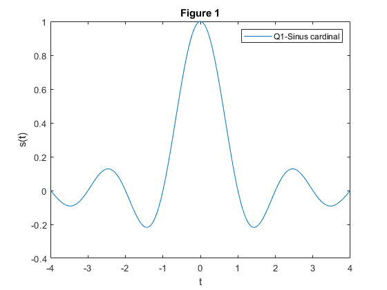 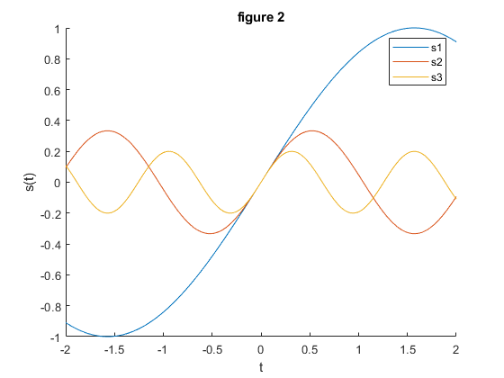 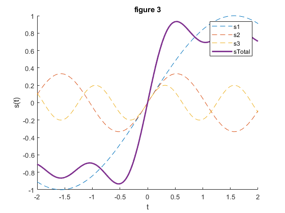 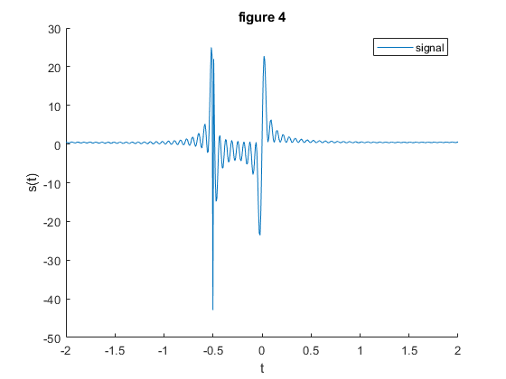 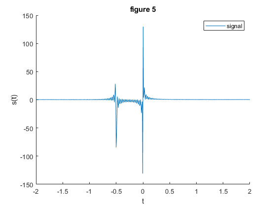
t20 = linspace(0,1,20);
t75 = linspace(0,1,75);
t100 = linspace(0,1,100);
t160 = linspace(0,1,160);
t180 = linspace(0,1,180);
t330 = linspace(0,1,330);
s20 = zeros(20,1);
s75 = zeros(75,1);
s100 = zeros(100,1);
s160 = zeros(160,1);
s180 = zeros(180,1);
s330 = zeros(330,1);
for i = 1:20
s20(i) = 2*sin(165*pi*t20(i)) + 13 * cos(6*pi*t20(i)) - 3 * cos(80*pi*t20(i));
end
for i = 1:75
s75(i) = 2*sin(165*pi*t75(i)) + 13 * cos(6*pi*t75(i)) - 3 * cos(80*pi*t75(i));
end
for i = 1:100
s100(i) = 2*sin(165*pi*t100(i)) + 13 * cos(6*pi*t100(i)) - 3 * cos(80*pi*t100(i));
end
for i = 1:160
s160(i) = 2*sin(165*pi*t160(i)) + 13 * cos(6*pi*t160(i)) - 3 * cos(80*pi*t160(i));
end
for i = 1:180
s180(i) = 2*sin(165*pi*t180(i)) + 13 * cos(6*pi*t180(i)) - 3 * cos(80*pi*t180(i));
end
for i = 1:330
s330(i) = 2*sin(165*pi*t330(i)) + 13 * cos(6*pi*t330(i)) - 3 * cos(80*pi*t330(i));
end
figure(6)
hold on;
subplot(6,1,1);
plot(t20,s20);
xlabel('t');
ylabel('s(t)');
title('figure 6');
subplot(6,1,2);
plot(t75,s75);
xlabel('t');
ylabel('s(t)');
subplot(6,1,3);
plot(t100,s100);
xlabel('t');
ylabel('s(t)');
subplot(6,1,4);
plot(t160,s160);
xlabel('t');
ylabel('s(t)');
subplot(6,1,5);
plot(t180,s180);
xlabel('t');
ylabel('s(t)');
subplot(6,1,6);
plot(t330,s330);
xlabel('t');
ylabel('s(t)');
hold off;
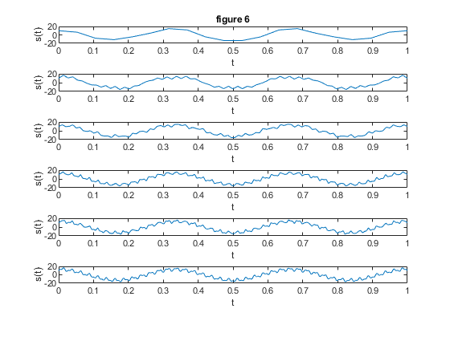
t = linspace(0,1,250);
Y1 = zeros(250,1);
Y2 = zeros(250,1);
Y3 = zeros(250,1);
for i = 1:250
Y1(i) = 7*sin(2*pi*10*t(i));
Y2(i) = 4*sin(2*pi*25*t(i)+ pi/3);
Y3(i) = 3*cos(2*pi*50*t(i));
end
figure(7)
hold on;
plot(t,Y1);
plot(t,Y2);
plot(t,Y3);
legend('Y1','Y2','Y3');
xlabel('t');
ylabel('Y(t)');
title('figure 7');
hold off;
z = zeros(250,1);
for i = 1:250
z(i) = Y1(i) + Y2(i) + Y3(i);
end
figure(8)
hold on;
plot(t,z);
legend('z');
xlabel('t');
ylabel('Z(t)');
title('figure 8');
hold off;
fftY11=fft(Y1);
Y1P2=abs(fftY11/length(fftY11));
Y1P1=Y1P2(1:length(fftY11)/2+1);
Y1P1(2:end-1)=2*Y1P1(2:end-1);
fY11=250*(0:(length(fftY11)/2))/length(fftY11);
fftY22=fft(Y2);
Y2P2=abs(fftY22/length(fftY22));
Y2P1=Y2P2(1:length(fftY22)/2+1);
Y2P1(2:end-1)=2*Y2P1(2:end-1);
fY22=250*(0:(length(fftY22)/2))/length(fftY22);
fftY33=fft(Y3);
Y3P2=abs(fftY33/length(fftY33));
Y3P1=Y3P2(1:length(fftY33)/2+1);
Y3P1(2:end-1)=2*Y3P1(2:end-1);
fY33=250*(0:(length(fftY11)/2))/length(fftY11);
figure(9)
hold on;
title('figure 9');
subplot(3,1,1);
plot(fY11,Y1P1);
legend('Y1');
xlabel('frequence');
ylabel('Amplitude');
subplot(3,1,2);
plot(fY22,Y2P1);
legend('Y2');
xlabel('frequence');
ylabel('Amplitude');
subplot(3,1,3);
plot(fY33,Y3P1);
legend('Y3');
xlabel('frequence');
ylabel('Amplitude');
hold off;
fftzz=fft(z);
zP2=abs(fftzz/length(fftzz));
zP1=zP2(1:length(fftzz)/2+1);
zP1(2:end-1)=2*zP1(2:end-1);
fz=250*(0:(length(fftzz)/2))/length(fftzz);
figure(10)
hold on;
plot(fz,zP1);
legend('Z');
xlabel('frequence');
ylabel('Amplitude');
hold off;
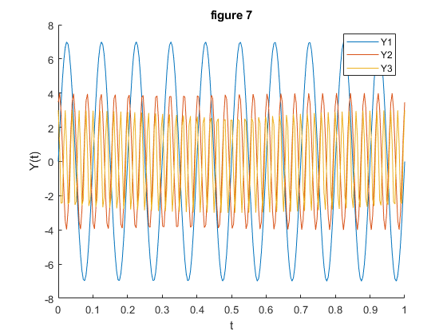 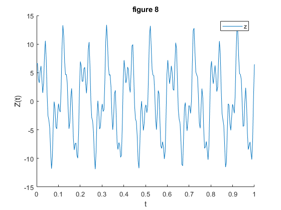 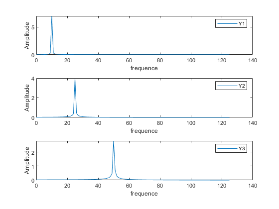 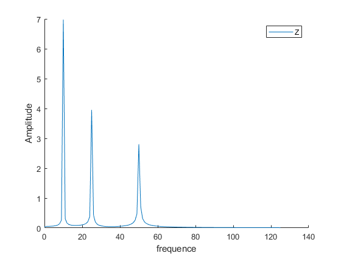
[ data, fe ] = audioread('audio.wav');
fftData2=fft(data);
dataP2=abs(fftData2/length(fftData2));
dataP1=dataP2(1:length(fftData2)/2+1);
dataP1(2:end-1)=2*dataP1(2:end-1);
fdata=fe*(0:(length(fftData2)/2))/length(fftData2);
figure(11)
hold on;
title('figure 11');
plot(fdata, dataP1);
legend('data');
xlabel('frequence');
ylabel('Amplitude');
hold off;
wn=900/(fe/2);
fpb=fir1(128,wn,'low');
fil=filter(fpb,1,data);
wn=250/(fe/2);
figure(12)
hold on;
title('figure 12');
w=chebwin(128+1,30);
chebyshev=fir1(128,wn,'high',w);
freqz(chebyshev);
hold on;
hamming=fir1(128,wn,'high');
freqz(hamming);
hold on;
w=blackman(128+1);
bman=fir1(128,wn,'high',w);
freqz(bman);
legend('s1','s2','s3');
hold off;
chebyshevFil = filter(chebyshev,1,fil);
hammingFil = filter(hamming,1,fil);
bmanFil = filter(bman,1,fil);
fftCheby=fft(chebyshevFil);
chebyP2=abs(fftCheby/length(fftCheby));
chebyP1=chebyP2(1:length(fftCheby)/2+1);
chebyP1(2:end-1)=2*chebyP1(2:end-1);
fcheby=fe*(0:(length(fftCheby)/2))/length(fftCheby);
fftham=fft(hammingFil);
hamP2=abs(fftham/length(fftham));
hamP1=hamP2(1:length(fftham)/2+1);
hamP1(2:end-1)=2*hamP1(2:end-1);
fham=fe*(0:(length(fftham)/2))/length(fftham);
fftBlack=fft(bmanFil);
blackP2=abs(fftBlack/length(fftBlack));
blackP1=blackP2(1:length(fftBlack)/2+1);
blackP1(2:end-1)=2*blackP1(2:end-1);
fblack=fe*(0:(length(fftBlack)/2))/length(fftBlack);
figure(13)
hold on;
subplot(3,1,1);
plot(fcheby, chebyP1);
title('Chebyshev, Hamming et Blackman');
legend('cheby');
xlabel('frequence');
ylabel('Amplitude');
subplot(3,1,2);
plot(fham, hamP1);
legend('ham');
xlabel('frequence');
ylabel('Amplitude');
subplot(3,1,3);
plot(fblack, blackP1);
legend('black');
xlabel('frequence');
ylabel('Amplitude');
hold off;
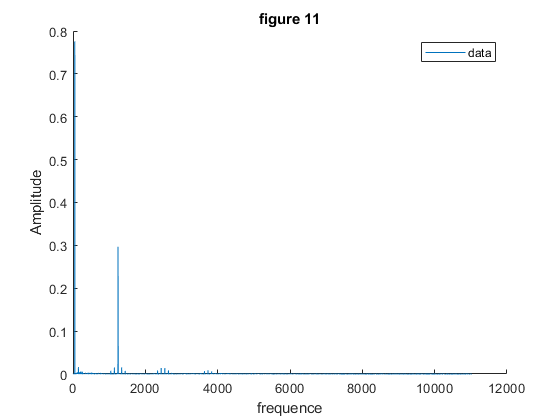 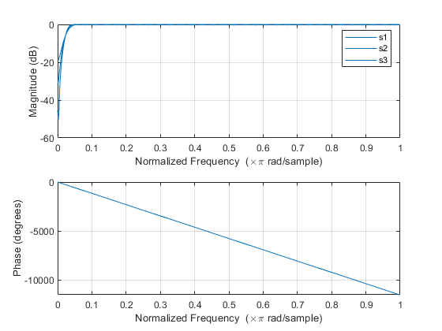 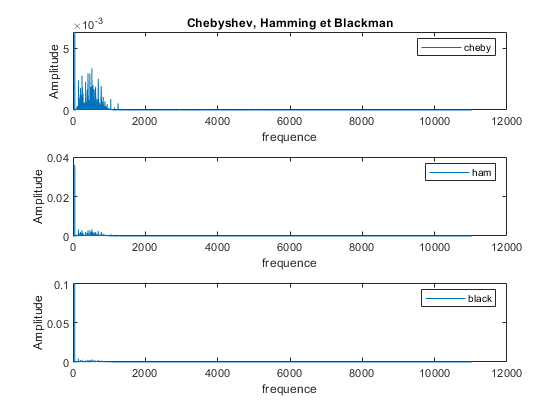